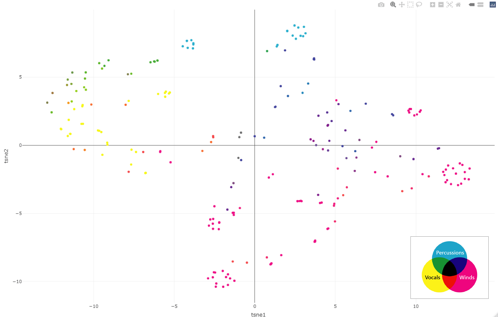
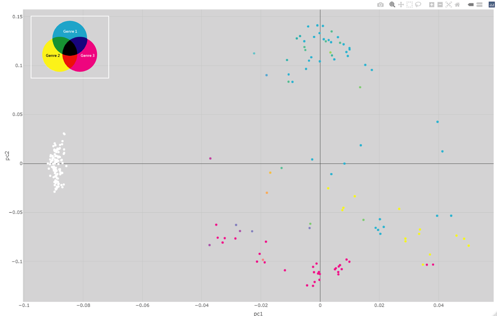
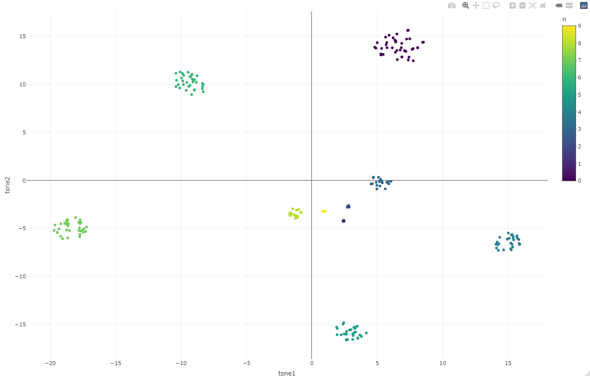
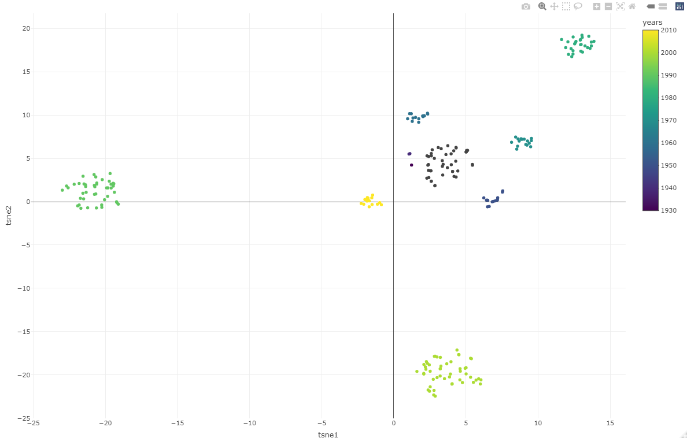

Thesis title for master degree, Interest of music topic, Applied by data visualization
We created jazz musician maps that displayed the similarities between musicians in terms of instruments, genres, and active years. For jazz musician data visualization, we selected 229 musicians associated with Wynton Marsalis and Roy Hargrove and used their instruments, genres, and active years as variables. We separated the data matrix by variable and turned each into an affinity matrix, and then we combined all of the affinity matrices and utilized PCA and t-SNE to reduce the matrix to two dimensions, resulting in jazz musician maps that were more informative than Linked Jazz. When we colored by variables, the instruments and genres were multi-value variables, meaning the musicians played more than one instrument or genre. Therefore, we presented that utilized the three primary colors of the CMYK color system to represent three groups and then tuned the color based on the number of each group to be the progressing method of coloring.
Points are musicians, Color by instruments, Distance are similarities based on mainly instruments, genres, and active years
Genres
Active years = Width * Midian of active decades
